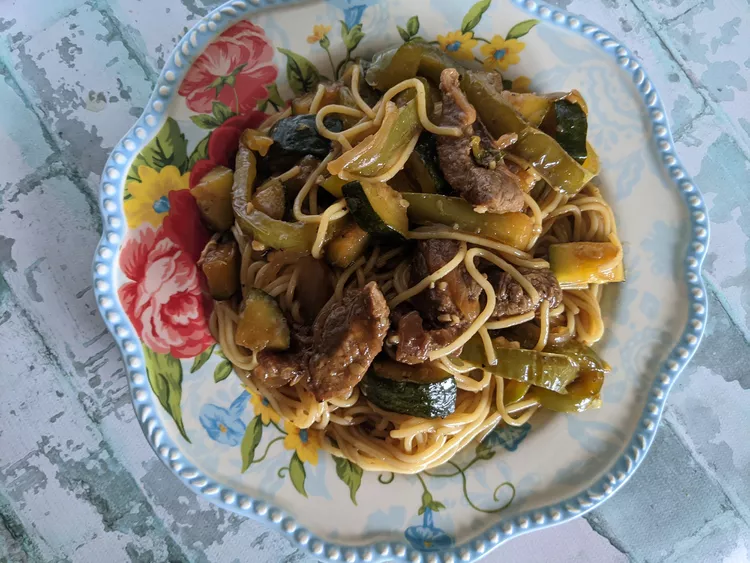

Beef Teriyaki Noodles

Ingredients
- 1 (8 ounce) package vermicelli noodles
- tablespoons vegetable oil, divided
- 2 medium zucchini, diced
- 1 medium yellow onion, thinly sliced
- 1 large bell pepper, diced
- salt and freshly ground black pepper to taste
- 1 tablespoon minced garlic
- 1 pound boneless rib-eye steak, fat trimmed, cut crosswise into thin strips
- ½ cup soy sauce
- ¼ cup water
- ¼ cup light brown sugar
- 2 tablespoons white vinegar
- 1 tablespoon cornstarch
- ½ teaspoon ground ginger
Steps
- Fill a large pot with lightly salted water and bring to a rolling boil; stir in noodles and return to a boil. Cook noodles uncovered, stirring occasionally, until the pasta is tender yet firm to the bite, 4 to 5 minutes. Drain and keep warm.
- Meanwhile, heat 1 tablespoon oil in a large nonstick skillet over medium-high heat; add zucchini, onion, and bell pepper. Season lightly with salt and pepper; cook, stirring occasionally, until vegetables are lightly caramelized and tender, about 8 minutes. Add minced garlic and cook until garlic is fragrant, about 1 minute. Transfer vegetables into a bowl and set aside.
- Heat remaining oil in the skillet until hot. Add steak strips and sear until nicely browned on each side and steak is cooked to medium. Season steak lightly with salt and pepper while it cooks.
- Meanwhile, to make the teriyaki sauce: combine soy sauce, water, brown sugar, vinegar, cornstarch, and ginger in a bowl. Whisk until sauce is well blended.
- Add vegetables back into the skillet once steak is cooked and pour teriyaki sauce over everything. Bring mixture to a simmer, and cook until the sauce thickens up, about 2 minutes. Add cooked noodles and gently stir to evenly coat noodles with the sauce. Taste, and adjust the seasonings if desired.